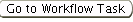

Previous Topic
Next Topic
| Facilities |
Previous Topic |
Next Topic |
The system’s Undelivered Mail page, available from the second-level menu of the Facilities tab. This page is only accessed when a user selects a specific task; for example by clicking on the Task Id from the Home ToDos. This page allows you to view a specific Undelivered Mail record for a single facility. All Undelivered Mail records for a facility can be viewed at one time in a datagrid from the third-level menu entitled Undelivered Mail. When mail is returned Central Office staff will enter a record of the Undelivered Mail. Generating this record will initiate a workflow. If Central Office is unable to resolve the delivery problem the workflow will progress to the DO/LAA person assigned to the facility so that information can be obtained in order to allow the document to be re-delivered.
For information on creating or editing an Undelivered Mail record, refer to the third-level menu Undelivered Mail Help page.
The following information will appear when you access a single Undelivered Mail record:
To edit the record, click  .
Complete any necessary changes and click
.
Complete any necessary changes and click  .
.
Creating a record will generate a workflow. If Central Office is unable to resolve the delivery problem the workflow will progress to the DO/LAA person assigned to the facility so that information can be obtained in order to allow the document to be re-delivered. The Undelivered Mail task will be identified in the person’s ToDos Home tab list. The person resolving the record should locate the appropriate delivery information and update the information in the third-level menu Owner/Contact of the facility’s Facility Profile. See the Owner/Contact Help page for assistance with editing these fields.
Once completed, the person resolving the record should complete sign-off of the workflow, identifying via the radio buttons on the Task Profile if the Facility Profile was updated. To access the Task Profile for the specific record from this page you may click on. As a final step in resolving the record, Central Office staff will update the Undelivered Mail record’s Disposition to indicate the action taken.
For additional help with workflows or the Task Profile, see the Workflow Diagram and Task Profile Help pages.
Back to Top
Copyright © 1996, 2004, Oracle. All rights reserved.